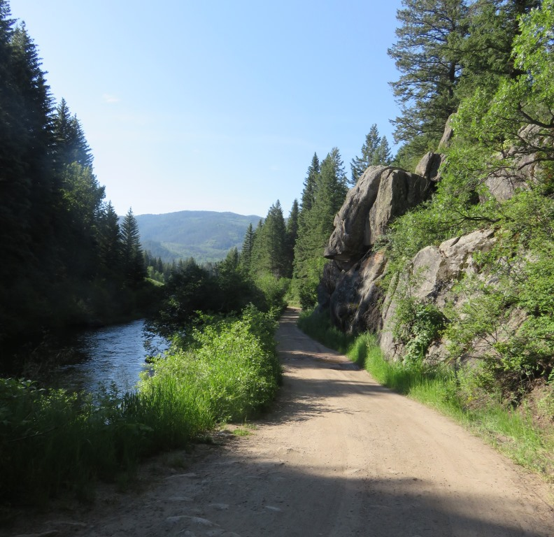
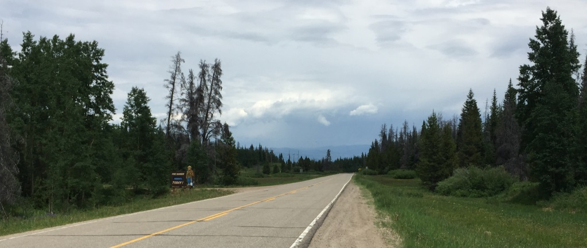
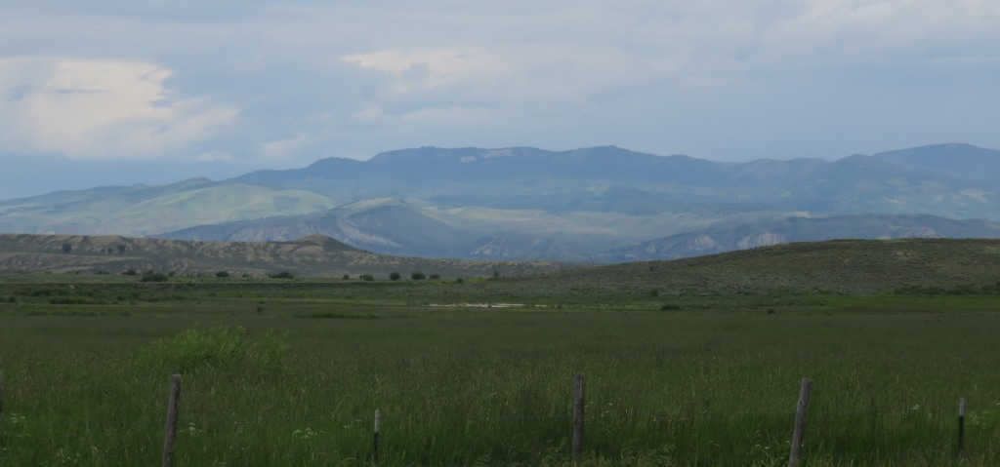
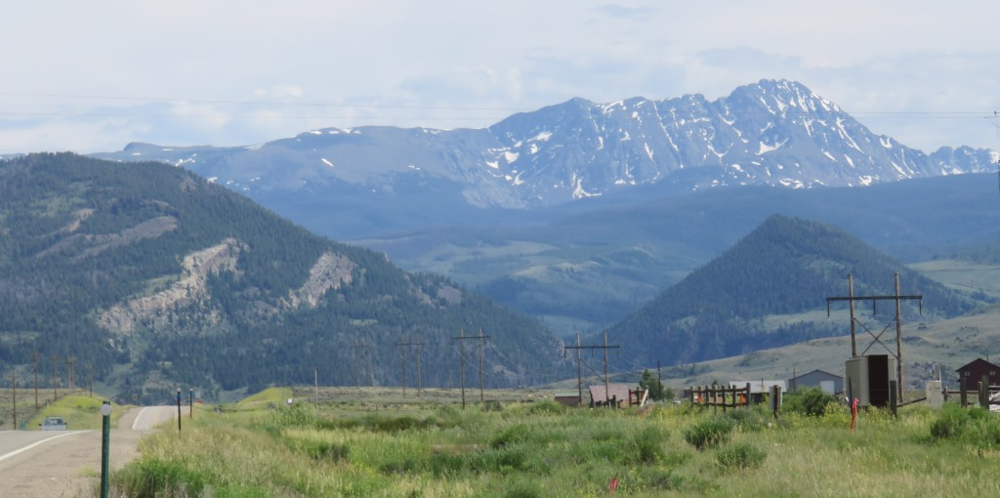

At the beginning of this day I wasn't sure how it would go. The first pass was 40 miles away and then the CD trail followed a loop around by the Colorado River. I wasn't sure if I had any easy alternatives until they presented themselves. My goal had been to get to Kremmling and then see what happens.
The first 20 miles out of Steamboat was developed with homes and ranches all around.

This road led to the Yampo River Dam. I was supposed to be riding across the top of it.Lynx Pass
I crossed over Lynx Pass earlier then I had thought I would. I actually rode up into this campground to confirm I had crossed the pass. The section between Lynx and when I switched onto the road near Gore Pass was mostly down.
Gore Pass
The map had an alternate which took me over Gore Pass along a road instead of through an old uranium mine. I didn't have much information on the alternate but determined that the climb to the pass from where I was turning off the "official route" was only 500 ft up.

Gore Pass and some interest clouds to ride into.It turned out to be about three miles to the pass and then a wonderful 16 mile coast down to US Hwy 40. From there it was about 6 miles to Kremmling, CO.

The road down off Gore Pass
Looking out at the mountains as I came down from Gore PassKremling to Dillon
Leaving Kremmling I knew I had 36 miles to Silverthorn and it was generally an upward slope but I wasn't really prepared for how difficult this section would be.
I had already traveled almost 70 miles when I started this stretch of road. It was under construction for the first 10 miles or so which turned out to be a blessing. Because of the construction the road was alternating lanes being open going north and then going south. Riding a bike you didnt have to stop. This allowed me to ride in the lane under construction and avoid the trucks, RVs and other large vehicles traveling on a pretty main route. This was one of the days that counting the miles remaining didn't help. My legs were dead and when it looked like I was going downhill I couldn't get any momentum. Along the reservoir I was crawling along and considered calling a car service in Dillon or hitching a ride. Once I had less than 15 miles to go I was able to convince myself that I could probably walk the last few miles if needed. It was a busy road and I got a boost when my route reconnected to the purple line.
Wednesday, July 1, 2015 Steamboat Springs to Dillon, CO
After traveling over 100 miles I got into Silverthorne / Dillon pretty late. I got a room at the Best Western on Lake Dillon and got dinner at the restaurant next door.
See full screen map To go places and do things that I've never done before – that’s what living is all about.Text by Jim O'Brien . Photographs by Jim O'BrienTD on Flickr.